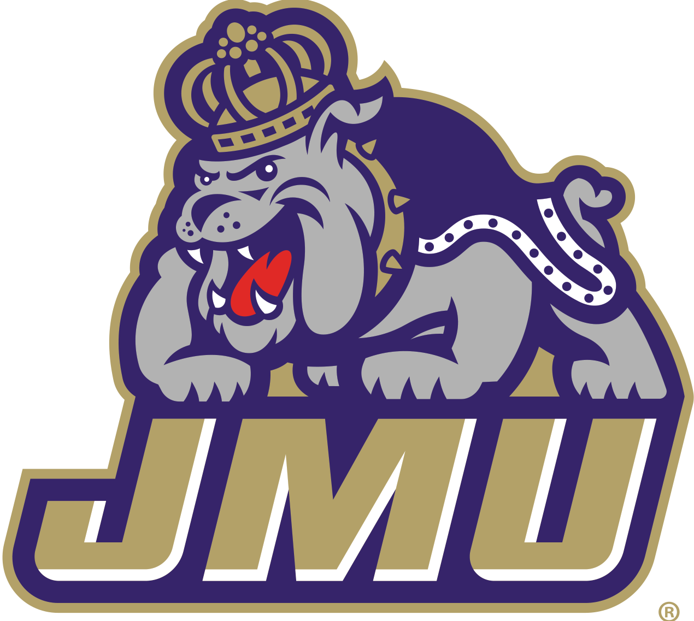

Mackenzie Herrlich
Contact
Education
Experience
Activities
Skills
herrlimn@dukes.jmu.edu
mackenzieherrlich@gmail.com
Education

Bachelor of Arts Degree in Media Arts and Design
Concentration in Interactive Design and Minor in German
Expected Graduation in May 2021
James Madison University
School of Media Arts and Design
54 Bluestone Drive
Harrisonburg, VA 22807
Experience
McDonald’s Team Member (Seasonal 2018 - present)
Union Beach, NJ 07735
- Ensures the food is properly handled and stored
- Experienced cashier and cash handling
- Ensures work area is clean and up to company standards
- Good customer service while taking orders, handling money, and handling food
- Connects well with the customers and gives them the best care of what they need
- Able to cope with different people, environments, and solving problems
Special Needs Caregiver (August 2015 - August 2017)
Belford, NJ 07718
- Ensured the needs of a special needs child four days a week
- Assisted and tutored the child with his homework after school
- Planned daily activities accordingly
- Assited in carrying out medical requirements that consisted of medication and physical therapy
Activities
JMU Unicef Club (September 2019 - present)
- Engage in discussion surrounding global issues and concerns facing the world’s most vulnerable children
- Help educate the JMU campus and surrounding Harrisonburg community about these issues
- Bringing awareness to UNICEF’s humanitarian work fosters a community of global citizens who are dedicated to service and leadership
National Society of Collegiate Scholars (February 2018 - Present)
- Honors organization that recognizes and elevates high-achieving students
- Connects with other members and alumni to network
- Learn more about scholarship, leadership and service
Skills
Knowledgeable in Microsoft Programs Including:
- Access
- Outlook
- Excel
- PowerPoint
- Word
Knowledgeable in Adobe Programs Including:
- Photoshop
- Illustrator
- InDesign
- Dreamweaver
- Lightroom
- Lightroom Classic
- After Effects
Basic Knowledge of German
Go to top